来源：https://xq8zkieg4ir.feishu.cn/docx/Trq7dCxwTozQqwx0Ed0cqudrnHe
大家一提彩票，是不是就第一印象中，从没中过或最多5元或10元。
彩票是不是赌博？和赌博有区别？
彩票是不是骗局？哪些大奖得主是不是有内幕啊？
为什么明知不会中奖还要去买？
中国彩票销售量还那么好？
……
为什么要实操这个项目呢？
有没有一种可以提高中奖概率方法或工具之类？
”纵如彩票虑我千百遍，我待彩票如初恋”
很真实的彩民生活写照。
彩票这东西有没有黑幕有没有骗局？
看下面一组数据：
在中国彩票短短30多年的发行史上，造假事件层出不穷。
截至目前，中国福彩中心已有14名局处级干部因贪腐被查。
纵然出现2023年12月2日的"10万买中2.2亿"的彩票事件；
2022年8月27日晚，体彩超级大乐透第22098期开奖过程出现异常。
2004年2月5日，“双色球”第2004009期开奖补拍录像事件酿成巨大风波。
2004年的西安宝马案让这场火爆全国的彩票盛宴泯灭无迹。
2002年的扬州彩世塔案就已经透露了“即开型”彩票的惯用套路。
2001年12月到2002年11月间，深圳市彩世塔公司利用承销彩票之机，分别在广东、上海、重庆、江苏等地的17个城市作弊20起，通过彩托“偷回”奖金5806万。
……
还有很多，没收集完全。
再看看如下亿元以上大奖：
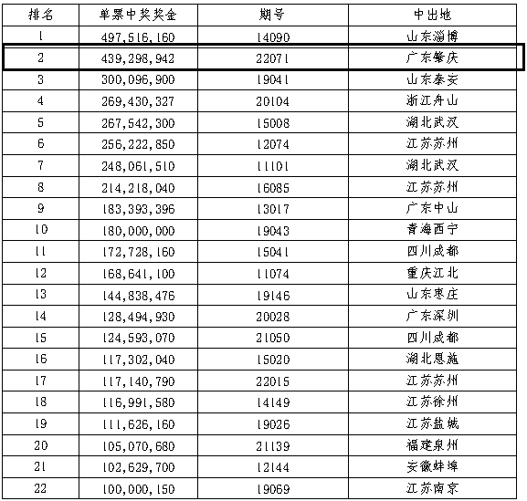
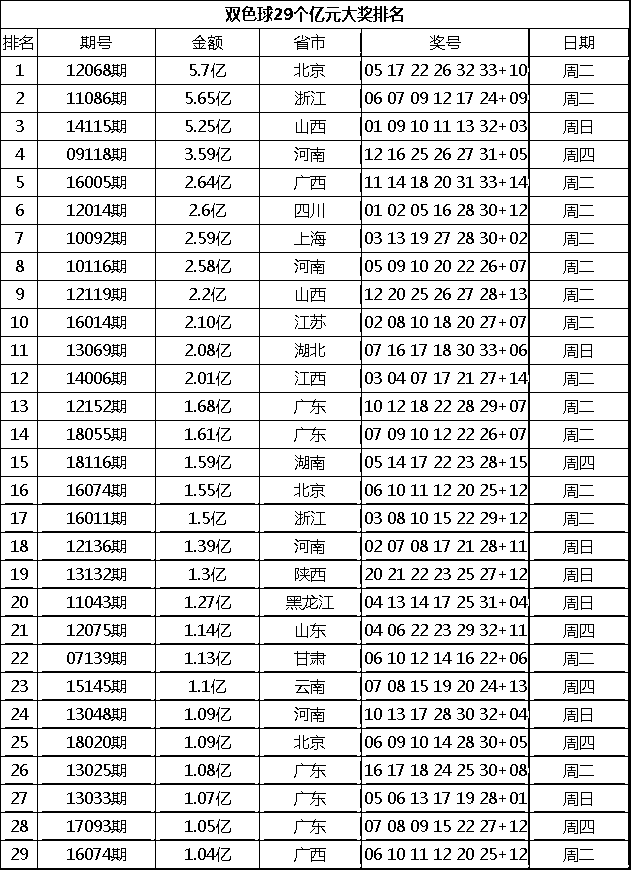
彩票这东西有没有黑幕有没有骗局我不知道也不敢多说，就好比猜拳，我先出你再出，结果可想而知，但是禁不住彩民的前赴后继啊。
彩票有官方背书，尽管事件很多，但也止不住“2元的彩票梦”。人都有一个追梦
对，这就是一个蓝海市场，尽管官方背书，只要是人，就有腐败的地方，但这些这些都阻挡不住众多的彩民“暴富梦”万一呢，万一中呢，2元买个梦想何乐而不为呢？
这个市场都有哪些人购买呢？
和我一样的穷人，心中有颗“暴富梦”，偶而小买或守号买；
一群投机的人，其中不凡有“富人”，玩的比较高级，倍数、大复式等之类。
一群大体在35岁以上的群体
……
而我为什么要进入这个彩票市场？
我能提供什么价值给用户呢？
起初，我建立这个大数据模型只是为了自己玩玩，提高中奖概率。
抛开头奖不谈，只要1等以下都可以追求，一等奖就交给运气了。后来头条上看一些发相关的文章，有粉丝又有收入，给了我启发，让我有了建设平台、私域的想法。
从不中到经常中的转变，也希冀用户用了，会有转折点出现，就有了时来运转这个平台。
注册公众号、头条号、抖音号
以及抖音账号运营
参考@金小亿 《从0开始，普通人可复制：抖音情感号25天抖音涨粉2.2W公众号涨粉4.5W（实战日训练营万字复盘附实操手册）》
注意点：
抖音较严格，不要太明显的，一般不会关小黑屋。
小红书封号比较严重，不建议
百家号也封号严重，不建议
视频号也卡的比较严，不适合
公众号发些实票类的信息不会被封，如何预测之类的信息会被封。
最适合的还是头条，就干头条就是了
分析走势图，官方网站、澳客网、500彩票网、新浪彩票等
选择固定一个时间段去发布，这样粉丝也会时刻了解。我一般定时在中午11点左右发布。
如果平台多、或号多，通过工具来管理账号以提高效率。
比如：咕噜管家、推精灵、蚁小二
前面都准备好了，就可以正式开工了。
一定要坚持发，刚开始几天没什么流量，一般3天后流量就起来了。
发布文章要勾选原创，不然收益会很少。
到这一步，相信人人都可以操作。一个号一个月200-500是没有问题的，如果弄个矩阵，应该日常生活开支是有的。
示例：
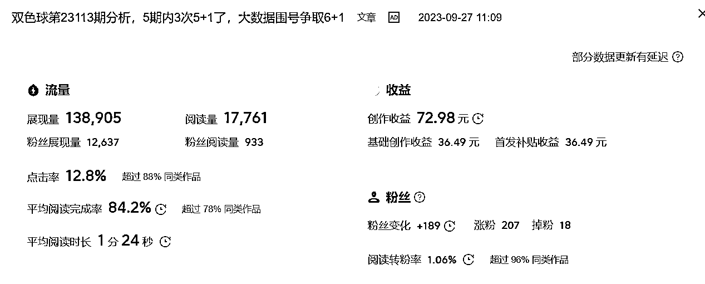
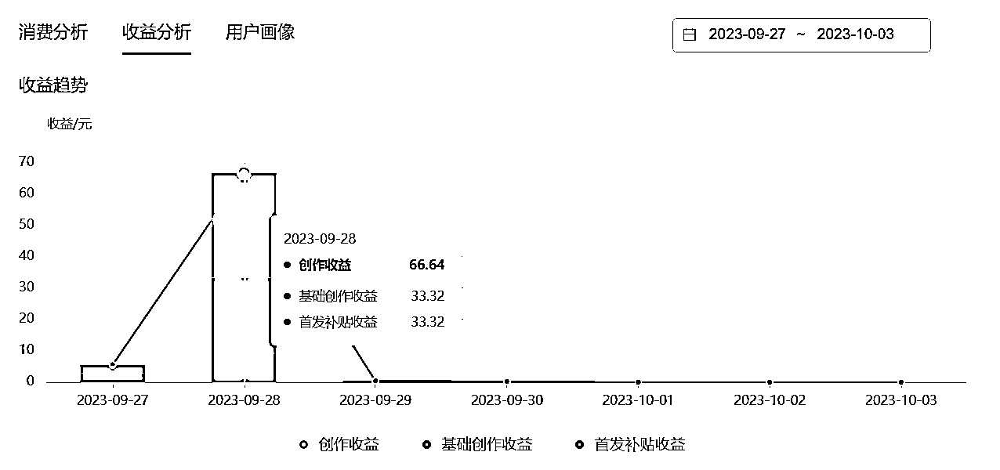
如果像这种，收益一天200-300是妥妥的：
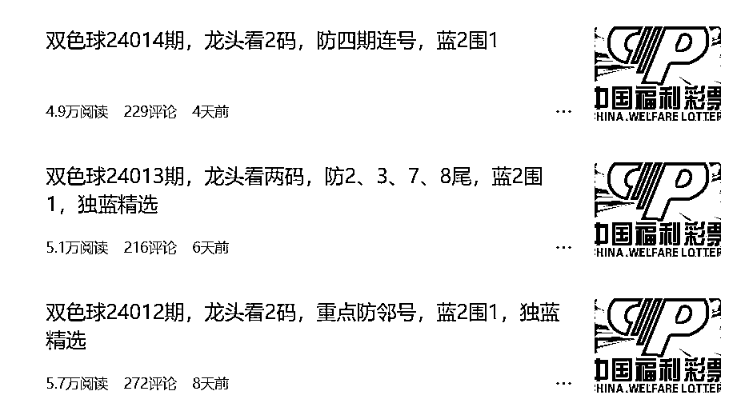
这个收益只是顺带的，重要的是社群收益。重要是后面社群变现，官方彩票返点是8点，可能其他地方也低1-2点火；还有其他方式变现。
我一大号”阿锦的百万生产线”2万粉丝，因不懂引流问题，直接被封号，后又开了号“天天薅羊毛啦”，后面有事就停更了，甚至整个计划都停了，直到加入生财有术，才重新提起来实操一遍。
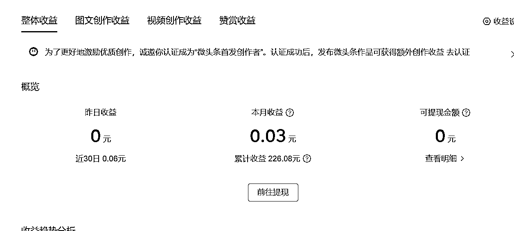
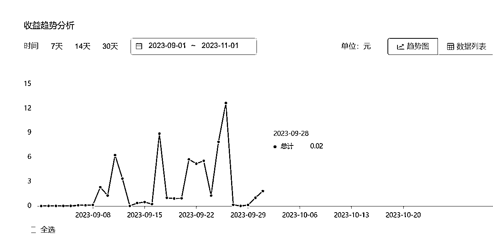
有一点要说明，就是这彩票类的文章，收益会相对其他类的少很多。
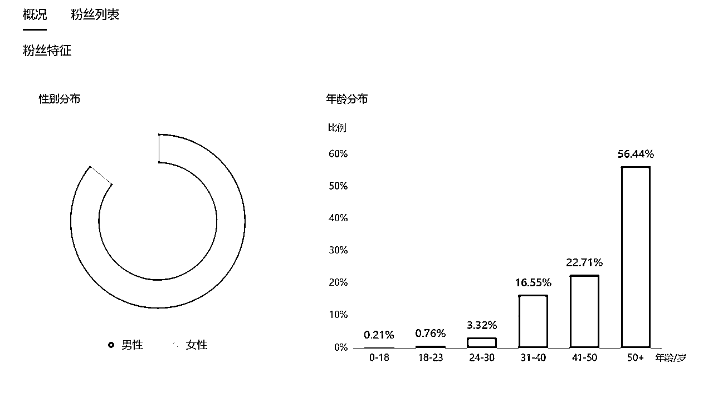
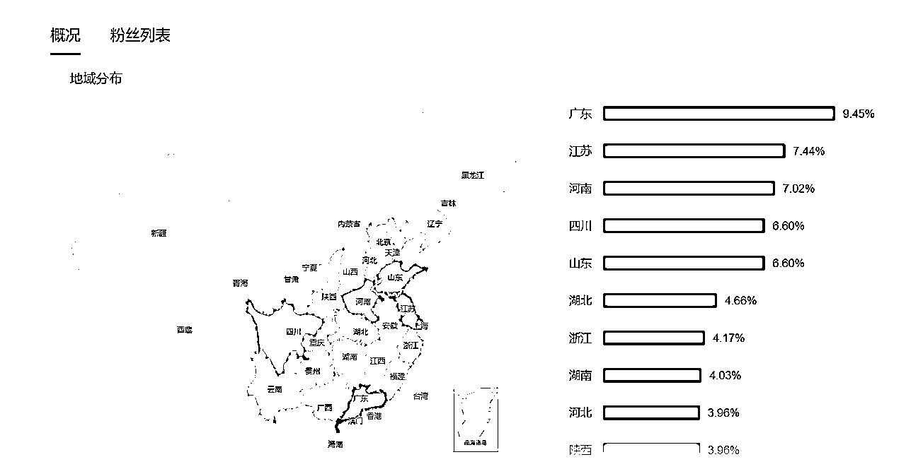
大号就是不懂引流，给引废了，永久封号。
参考@郭晓文老师的 《抖音引流Tips合集：鱼钩思维+企业号专属引流方式+常见误区》
在文章留下钩子的，比如”后台回复秘密，我再告诉一个秘密!”
在自己头条文章的评论区用小号提问，然后用作者号回复，并留下钩子，引导用户添加。
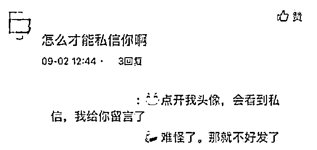
这种评论自己可以做置顶处置，这样用户点击文章就能看点这样的信息，文章的内容信息也是合规没有任何风险，不会影响文章及作者内容。
这个还未试，不知道可行不可行，先记录着
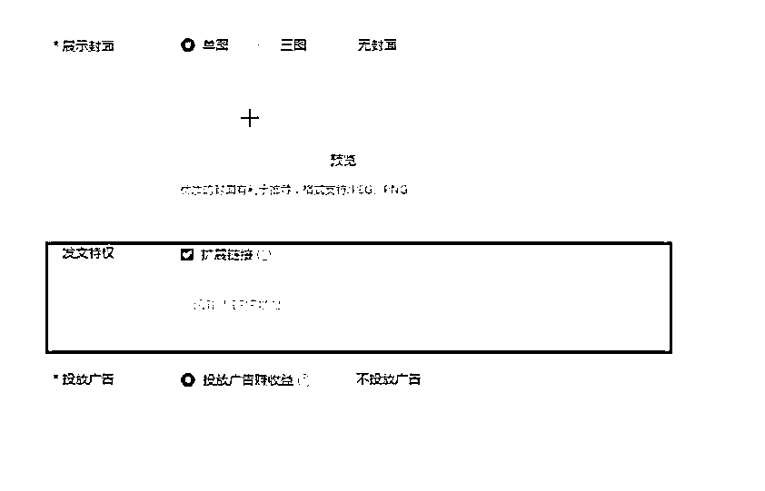
但是目前大家采用的方式都是用天天外链的链接在橙子建站来做落地页，将落地页的链接放置在扩展连接中，等待审核之后，就可以正常显示了。用户点击链接即可跳转至微信场景内，长摁添加好友或关注公众号。
[注意] 这站外链接，需要文章内容与链接想符合才行，需要去试试
这个也还试过，先记录着
彩票站点，这个是最表准的粉丝群体，大部分的站点都会有1个群以上，打入内部。
首先联营彩票站点，谈分成返点一般都会谈妥，大部分彩票站点营业额都不会高，都会有这个意愿合作，甚至8个点都返给你都能成，站点老板都希望自己站点有“高手”在，能提高中奖率，这样就能提高站点人气，形成良性循环，主要看自己谈。
其次，等社群购买力提高，可以考虑自己运营站点。
现在抖音上挺多采用这种直播刮刮彩。
提醒，希望别玩私彩，违法，违法，违法！！！
我暂时还没玩，先记录
所有平台都会扫号！第一个扫的是网络环境异常，网络环境异常。
在承接流量时，出现的问题：
1.解决信任问题：
我的解决方式，先9.9或免费试用5期，用户满意再交付。
2.
构建平台，承接更多的变现方式
等初级走通后，就可以加入其他元素玩法。
一开始我的想法是自己管理更多的群，但相信这样分散更多的精力。来了生财后，看到
@百川 知识星球 | 深度连接铁杆粉丝，运营高品质社群，知识变现的工具这篇里有段讲的挺好；
如何在微信重压下构架“私域流量”网络
我组织200个人，每个人都养一个5000人的微信号，我只要能和这200人建立紧密的合作关系，那不就相当于我自己养了200个5000人的微信号嘛
自己搞200个号，我多累啊，万一被微信大批量封号那就整个业务瘫痪，但是我要是通过模式，利用网络管理200个人，让这200个人自己再去当诸侯发展自己的人
这事情就裂变开了呀，如果控制了货源，这不就等于在家里躺着有税后收入了嘛？何必要自己搞那么多号？
这个模式很不错，轻松又不累，收益也扩大。效果也更佳。
在我们内容里输出，分出一部分模型公式给徒弟去输出，让徒弟去管理更多的群，把意愿缴费的会员的统一再归类，这样变现就可以和徒弟进行分润即可。
一开始我对流量主这个熟悉又陌生，知道有这玩意，不知道干嘛用，如何用。
参考@唐门三叔 我是如何用10个中老年种子用户，打通《小程序流量主自动裂变终极玩法》这套变现模式的精华分享
看到这篇精华文后，感叹流量主原来是这样啊，哇，人群不正好和我的人群重合吗，赶紧收藏，纳入体系内。